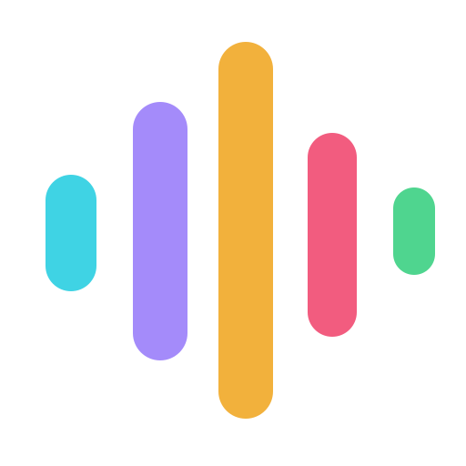
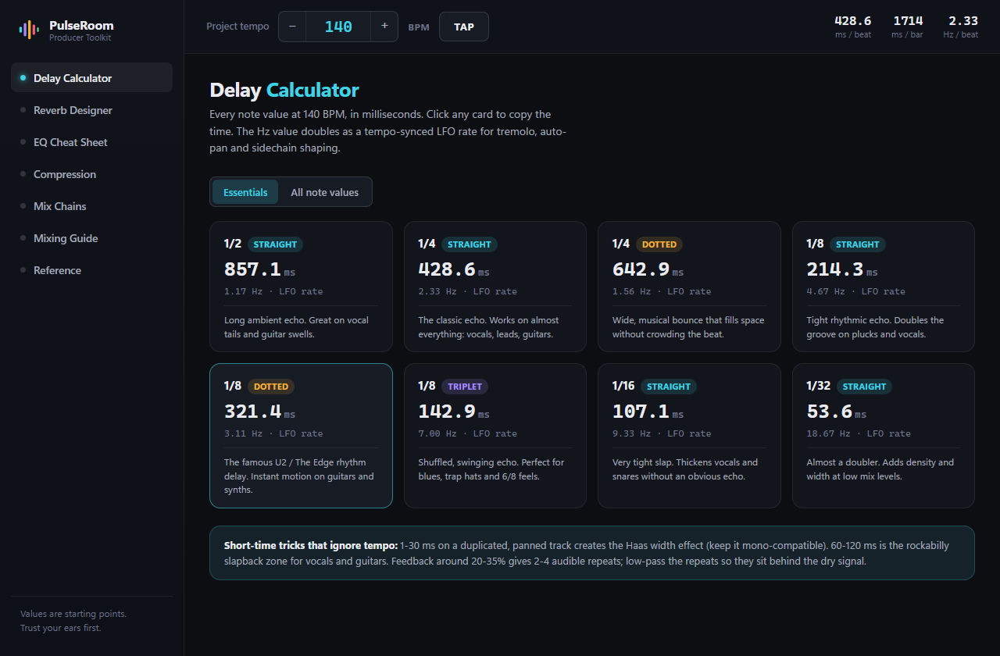
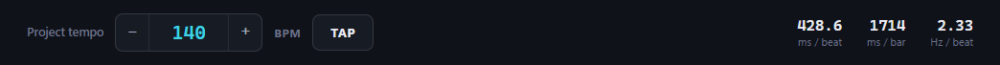
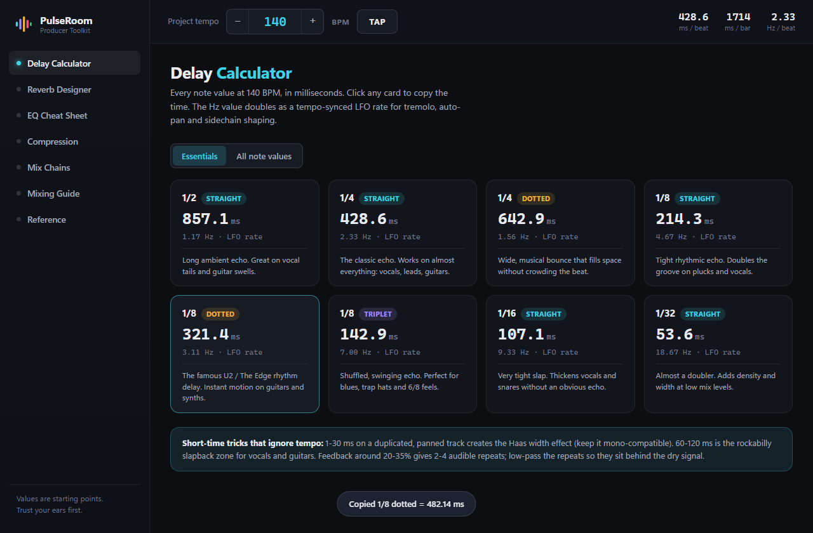
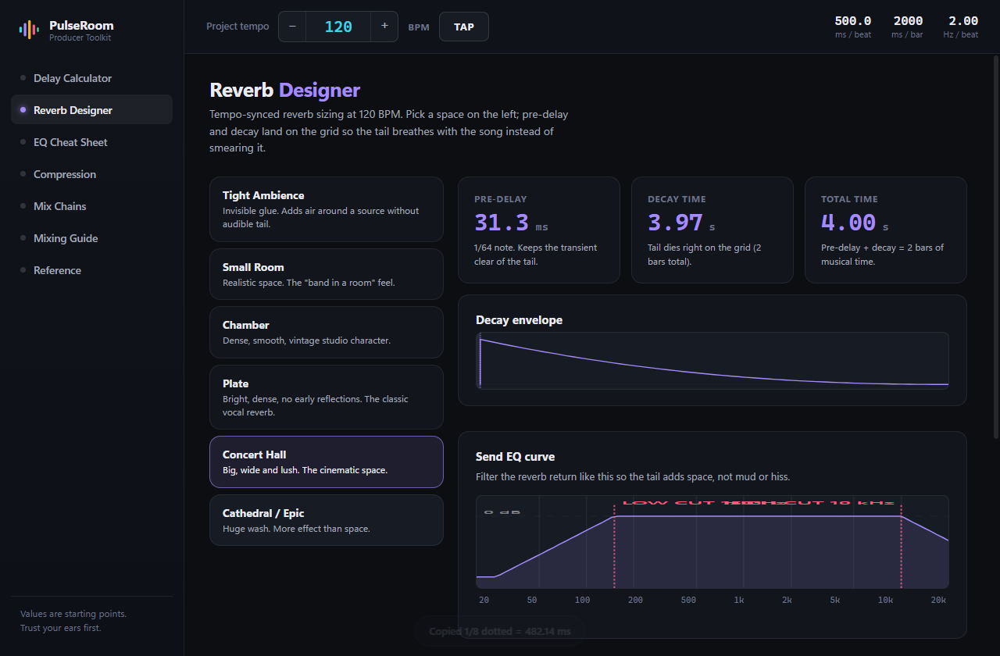
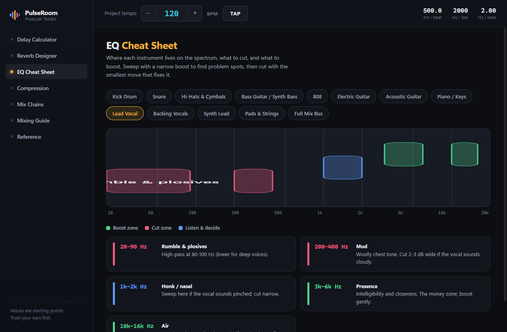
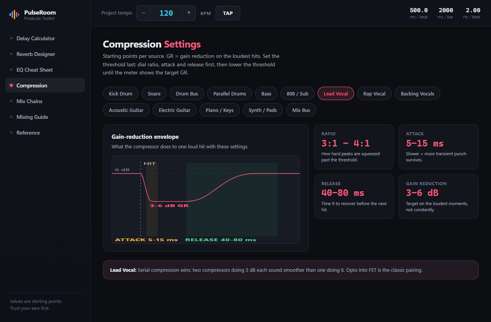
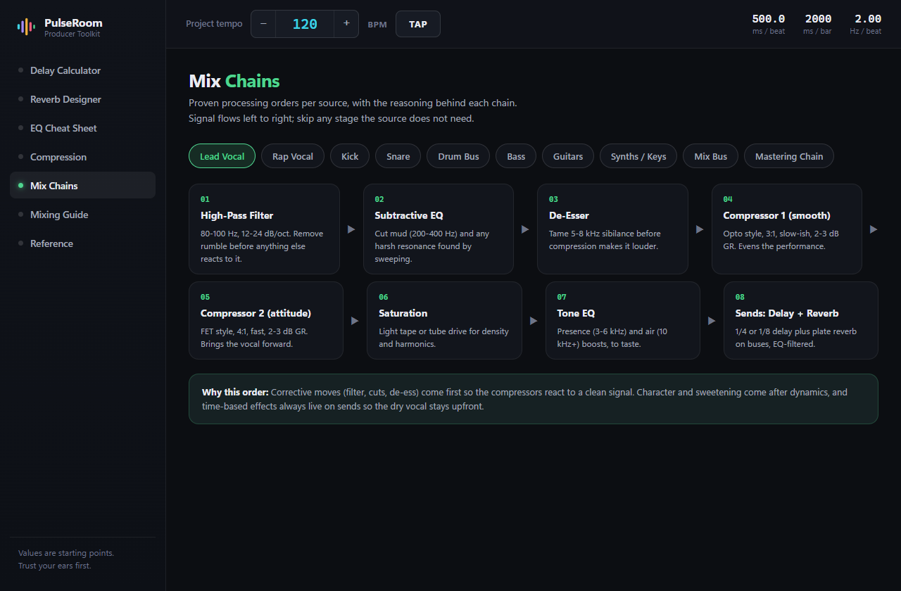
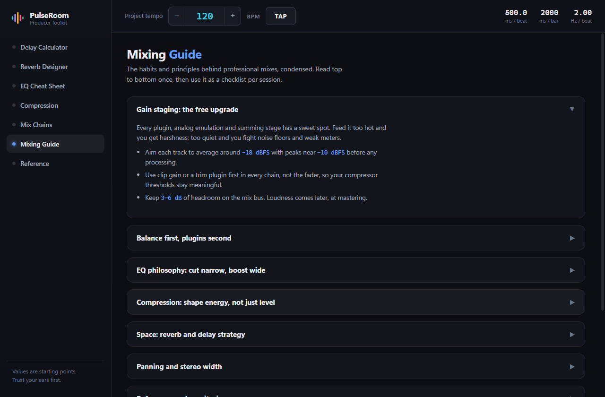
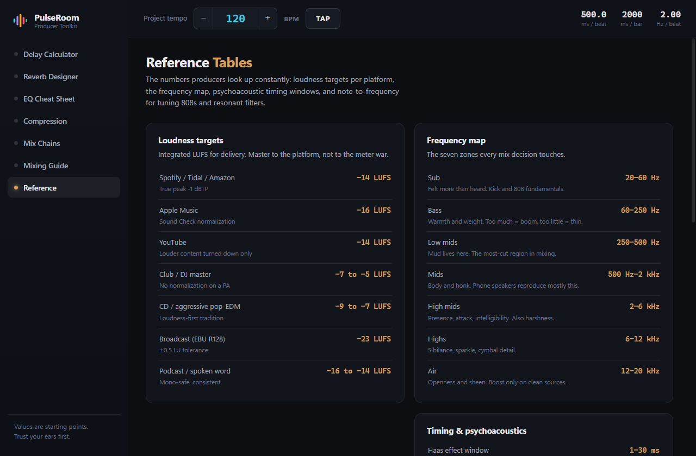

PulseRoomPulseRoom turns your song’s BPM into delay times, reverb tails, EQ moves and compression settings — in one desktop app that opens faster than the browser tab it replaces.
Around 2 MB · Works offline · No account, no ads

What delay time fits 140 BPM. Where the mud lives on a vocal. What attack keeps the kick punchy. The answers exist — spread across ad-choked calculator sites, a cheat-sheet PDF somewhere in Downloads, and a YouTube video you half remember. Each lookup costs five minutes and the thread you were pulling.
Tempo
Type your BPM, nudge it, or tap it in — the bar sits above every page like a DAW transport, with milliseconds per beat and per bar always in view. Delay and reverb recalculate as you go. You never enter the tempo twice.

Delay
PulseRoom opens on the ones that matter — 1/4, 1/8 dotted, 1/8 triplet and the rest — each with a note on what it’s for. Click a card and the millisecond value is on your clipboard. The full twenty-one-value grid is one toggle away when you need it.

Reverb
Pick a space — tight ambience through cathedral — and the pre-delay and decay are sized to the grid, so the tail breathes with the song instead of smearing it. The send-EQ curve is drawn for you: the habit that separates clean mixes from muddy ones.

EQ
Thirteen sources, from kick drum to mix bus. Pick one and the boost zones, cut zones and the ones worth listening to first are painted onto a real log-scale spectrum — with the reason underneath each band, in plain language.

Compression
Fourteen sources, each with its gain-reduction envelope drawn: the hit lands, the reduction dives through the attack window, holds, then recovers through the release. The most misunderstood pair of knobs in mixing, shown instead of described.

Mix chains
Ten sources, lead vocal through the mastering chain, laid out as numbered steps with the settings for each. A de-esser after the compressor causes problems no EQ will fix — so every chain carries a card explaining why it runs the way it does.

Tap tempo averages up to eight hits and resets if you pause, so you can find a track’s BPM by ear the way you would on a drum machine. The keyboard shortcut works from any page.
Click any value and it’s copied, with a small confirmation. Straight into the plugin, no retyping, no transcription errors at 2 a.m.
No account, no telemetry, no ads, no spinner. It runs entirely on your machine, which is why it opens before a browser tab would have finished loading.
Match the session once. Everything else follows.
Quarter and eighth-dotted into the send delays.
Pick the space, copy pre-delay and decay, mirror the EQ curve.
EQ zones while you cut, envelopes while you compress.
Master against the right LUFS target for where it’s going.


| Browser calculators | PDF cheat sheets | PulseRoom | |
|---|---|---|---|
| Tempo-synced values | Re-entered per site | Never | Live, app-wide |
| Visual EQ and compression | No | Static and generic | Interactive, per source |
| Explains the why | No | Rarely | Every value |
| Works offline | No | Yes | Yes |
| Click to copy | Rare | No | Everywhere |
| Belongs beside a DAW | Ads everywhere | Clip art | Plugin-grade dark UI |
Free
All seven modules, both platforms, no account and no ads. It’s the tool the studio uses every session — there was never a reason to charge for it.
Free, offline, no account. Close six browser tabs on the way in.
Values are starting points — trust your ears first.